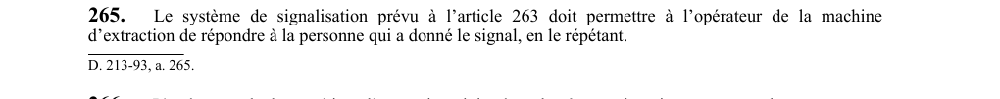

art-265-RSSM : répétition signal par opérateur
Un article du wiki ⚖️ Recueil législatif
En bref
Le système de signalisation doit permettre à l'opérateur de la machine d'extraction de répondre à la personne qui a donné le signal en le répétant. Cette obligation vise l'employeur.
🌐 LegisQuébec · 📄 PDF officiel
Texte officiel : capture du PDF

Toucher l'image pour l'agrandir🔗 Voir art. 265 RSSM dans le PDF (page 76)
Version : texte officiel du RSSM (RLRQ c. S-2.1, r. 14), à jour au 1er mai 2024 — Éditeur officiel du Québec
Voir aussi
- art. 263 : système signalisation puits extraction · obligation : un système de signalisation permettant la communication entre la salle de la machine d'extraction et toute recette ou palier doit être installé pour chaque compartiment d'extraction, les signaux devant être conformes aux codes des articles 269 et 277.
- art. 264 : personnes autorisées émettre signaux · obligation : seules les personnes ayant reçu la formation prévue à l'article 27.6 et autorisées par l'employeur peuvent émettre les signaux ; leurs noms doivent figurer sur une liste à jour affichée au poste de travail de l'opérateur de la machine d'extraction.
- art. 266 : réponse obligatoire avant mouvement transporteur · obligation : l'opérateur de la machine d'extraction doit répondre à tous les signaux avant de remonter ou de descendre des personnes ou du matériel.
- art. 267 : signalisation verbale communication fonçage puits · obligation : dans un puits en fonçage, le système de signalisation doit permettre aux travailleurs au fond de voir les signaux ; un système de communication verbale indépendant, régi par une procédure spécifique prévoyant la répétition des instructions par l'opérateur.
- ⚖️ Loi habilitante : LSST
- ↑ Index du bloc : Premiers secours et sauvetage
Pages qui pointent ici (5)
- art-263-RSSM : système signalisation puits extraction Recueil législatif
- art-264-RSSM : personnes autorisées émettre signaux Recueil législatif
- art-266-RSSM : réponse obligatoire avant mouvement transporteur Recueil législatif
- art-267-RSSM : signalisation verbale communication fonçage puits Recueil législatif
- RSSM : Premiers secours et sauvetage (art. 251 à 280) Recueil législatif